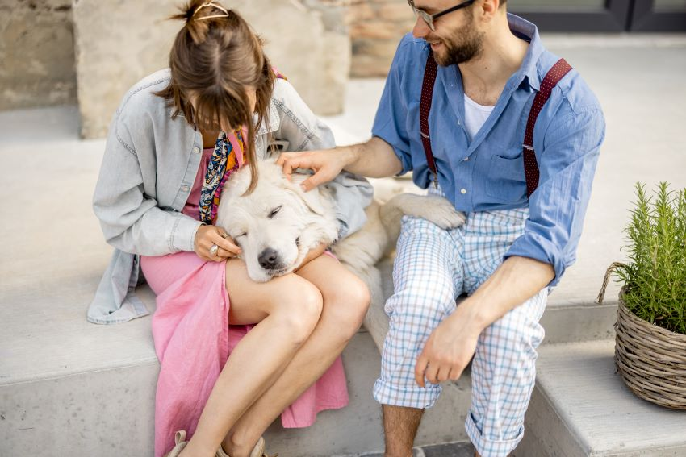

¡Bienvenido a Animals! Somos más que una compañía, somos una comunidad apasionada dedicada a mejorar la experiencia entre las mascotas y sus dueños. En Animals, nos comprometemos a proporcionar información valiosa sobre el cuidado, la salud y el amor necesario para garantizar una vida plena para tus amigos peludos.
En nuestro mundo, Animals no es solo un nombre, es un compromiso con la adopción responsable. Creemos en la creación de conexiones significativas y duraderas, promoviendo un ambiente donde los animales encuentren hogares llenos de amor y responsabilidad.
Únete a nosotros en Animals, donde celebramos el vínculo especial entre humanos y animales. Fomentamos la adopción como la opción preferida y desalentamos la venta de animales, trabajando juntos para construir un mundo donde cada mascota tenga la oportunidad de vivir una vida feliz y saludable. ¡Descubre el amor incondicional en Animals!
Adopta no compres
Fomenta la adopción responsable al destacar las historias conmovedoras de mascotas que encontraron hogares amorosos después de ser rescatadas. Incentiva a la comunidad a optar por la adopción en lugar de la compra, destacando las ventajas de brindar un hogar a una mascota necesitada.
Bienestar total
Enfocada en la salud integral de las mascotas y su impacto positivo en la vida de los dueños. Proporciona recursos educativos sobre nutrición, ejercicio y cuidados veterinarios. Invita a los dueños a compartir sus propias rutinas de bienestar con el hashtag #AnimalsWellness.
Conviértete en el Héroe de una Mascota
Motiva a la comunidad a convertirse en héroes al adoptar mascotas en situaciones difíciles. Destaca mascotas con necesidades especiales o que han pasado mucho tiempo en refugios. Ofrece recursos y apoyo especializado para aquellos que eligen adoptar a estos valientes compañeros
Conéctate con tu Compañero
Promueve la conexión emocional entre mascotas y dueños. Destaca la importancia de la comunicación, el juego y la comprensión mutua. Invita a la comunidad a compartir fotos y videos de sus momentos especiales con sus mascotas bajo el hashtag #AnimalsConnection.